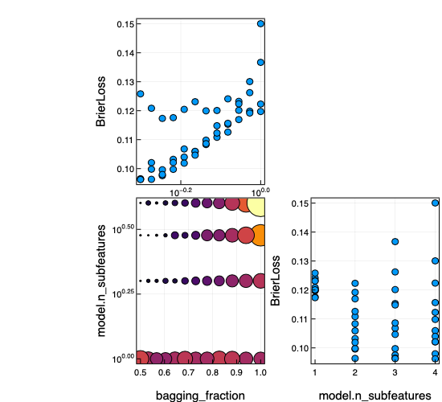

Common MLJ Workflows
Data ingestion
import RDatasets
channing = RDatasets.dataset("boot", "channing")
first(channing, 4)| Sex | Entry | Exit | Time | Cens | |
|---|---|---|---|---|---|
| Cat… | Int32 | Int32 | Int32 | Int32 | |
| 1 | Male | 782 | 909 | 127 | 1 |
| 2 | Male | 1020 | 1128 | 108 | 1 |
| 3 | Male | 856 | 969 | 113 | 1 |
| 4 | Male | 915 | 957 | 42 | 1 |
Inspecting metadata, including column scientific types:
schema(channing)┌─────────┬────────────────────────────────┬───────────────┐
│ _.names │ _.types │ _.scitypes │
├─────────┼────────────────────────────────┼───────────────┤
│ Sex │ CategoricalValue{String,UInt8} │ Multiclass{2} │
│ Entry │ Int32 │ Count │
│ Exit │ Int32 │ Count │
│ Time │ Int32 │ Count │
│ Cens │ Int32 │ Count │
└─────────┴────────────────────────────────┴───────────────┘
_.nrows = 462
Unpacking data and correcting for wrong scitypes:
y, X = unpack(channing,
==(:Exit), # y is the :Exit column
!=(:Time); # X is the rest, except :Time
:Exit=>Continuous,
:Entry=>Continuous,
:Cens=>Multiclass)
first(X, 4)| Sex | Entry | Cens | |
|---|---|---|---|
| Cat… | Float64 | Cat… | |
| 1 | Male | 782.0 | 1 |
| 2 | Male | 1020.0 | 1 |
| 3 | Male | 856.0 | 1 |
| 4 | Male | 915.0 | 1 |
Note: Before julia 1.2, replace !=(:Time) with col -> col != :Time.
y[1:4]4-element Array{Float64,1}:
909.0
1128.0
969.0
957.0Loading a built-in supervised dataset:
X, y = @load_iris;
selectrows(X, 1:4) # selectrows works for any Tables.jl table(sepal_length = [5.1, 4.9, 4.7, 4.6],
sepal_width = [3.5, 3.0, 3.2, 3.1],
petal_length = [1.4, 1.4, 1.3, 1.5],
petal_width = [0.2, 0.2, 0.2, 0.2],)y[1:4]4-element CategoricalArray{String,1,UInt32}:
"setosa"
"setosa"
"setosa"
"setosa"Model search
Reference: Model Search
Searching for a supervised model:
X, y = @load_boston
models(matching(X, y))54-element Array{NamedTuple{(:name, :package_name, :is_supervised, :docstring, :hyperparameter_ranges, :hyperparameter_types, :hyperparameters, :implemented_methods, :is_pure_julia, :is_wrapper, :load_path, :package_license, :package_url, :package_uuid, :prediction_type, :supports_online, :supports_weights, :input_scitype, :target_scitype, :output_scitype),T} where T<:Tuple,1}:
(name = ARDRegressor, package_name = ScikitLearn, ... )
(name = AdaBoostRegressor, package_name = ScikitLearn, ... )
(name = BaggingRegressor, package_name = ScikitLearn, ... )
(name = BayesianRidgeRegressor, package_name = ScikitLearn, ... )
(name = ConstantRegressor, package_name = MLJModels, ... )
(name = DecisionTreeRegressor, package_name = DecisionTree, ... )
(name = DeterministicConstantRegressor, package_name = MLJModels, ... )
(name = DummyRegressor, package_name = ScikitLearn, ... )
(name = ElasticNetCVRegressor, package_name = ScikitLearn, ... )
(name = ElasticNetRegressor, package_name = MLJLinearModels, ... )
⋮
(name = RidgeRegressor, package_name = MultivariateStats, ... )
(name = RidgeRegressor, package_name = ScikitLearn, ... )
(name = RobustRegressor, package_name = MLJLinearModels, ... )
(name = SGDRegressor, package_name = ScikitLearn, ... )
(name = SVMLinearRegressor, package_name = ScikitLearn, ... )
(name = SVMNuRegressor, package_name = ScikitLearn, ... )
(name = SVMRegressor, package_name = ScikitLearn, ... )
(name = TheilSenRegressor, package_name = ScikitLearn, ... )
(name = XGBoostRegressor, package_name = XGBoost, ... ) models(matching(X, y))[6]CART decision tree regressor.
→ based on [DecisionTree](https://github.com/bensadeghi/DecisionTree.jl).
→ do `@load DecisionTreeRegressor pkg="DecisionTree"` to use the model.
→ do `?DecisionTreeRegressor` for documentation.
(name = "DecisionTreeRegressor",
package_name = "DecisionTree",
is_supervised = true,
docstring = "CART decision tree regressor.\n→ based on [DecisionTree](https://github.com/bensadeghi/DecisionTree.jl).\n→ do `@load DecisionTreeRegressor pkg=\"DecisionTree\"` to use the model.\n→ do `?DecisionTreeRegressor` for documentation.",
hyperparameter_ranges = (nothing, nothing, nothing, nothing, nothing, nothing, nothing),
hyperparameter_types = ("Int64", "Int64", "Int64", "Float64", "Int64", "Bool", "Float64"),
hyperparameters = (:max_depth, :min_samples_leaf, :min_samples_split, :min_purity_increase, :n_subfeatures, :post_prune, :merge_purity_threshold),
implemented_methods = Symbol[:clean!, :fit, :fitted_params, :predict],
is_pure_julia = true,
is_wrapper = false,
load_path = "MLJModels.DecisionTree_.DecisionTreeRegressor",
package_license = "MIT",
package_url = "https://github.com/bensadeghi/DecisionTree.jl",
package_uuid = "7806a523-6efd-50cb-b5f6-3fa6f1930dbb",
prediction_type = :deterministic,
supports_online = false,
supports_weights = false,
input_scitype = Table{_s24} where _s24<:Union{AbstractArray{_s23,1} where _s23<:Continuous, AbstractArray{_s23,1} where _s23<:Count, AbstractArray{_s23,1} where _s23<:OrderedFactor},
target_scitype = AbstractArray{Continuous,1},
output_scitype = Unknown,)More refined searches:
models() do model
matching(model, X, y) &&
model.prediction_type == :deterministic &&
model.is_pure_julia
end15-element Array{NamedTuple{(:name, :package_name, :is_supervised, :docstring, :hyperparameter_ranges, :hyperparameter_types, :hyperparameters, :implemented_methods, :is_pure_julia, :is_wrapper, :load_path, :package_license, :package_url, :package_uuid, :prediction_type, :supports_online, :supports_weights, :input_scitype, :target_scitype, :output_scitype),T} where T<:Tuple,1}:
(name = DecisionTreeRegressor, package_name = DecisionTree, ... )
(name = DeterministicConstantRegressor, package_name = MLJModels, ... )
(name = ElasticNetRegressor, package_name = MLJLinearModels, ... )
(name = EvoTreeRegressor, package_name = EvoTrees, ... )
(name = HuberRegressor, package_name = MLJLinearModels, ... )
(name = KNNRegressor, package_name = NearestNeighbors, ... )
(name = LADRegressor, package_name = MLJLinearModels, ... )
(name = LassoRegressor, package_name = MLJLinearModels, ... )
(name = LinearRegressor, package_name = MLJLinearModels, ... )
(name = NeuralNetworkRegressor, package_name = MLJFlux, ... )
(name = QuantileRegressor, package_name = MLJLinearModels, ... )
(name = RandomForestRegressor, package_name = DecisionTree, ... )
(name = RidgeRegressor, package_name = MLJLinearModels, ... )
(name = RidgeRegressor, package_name = MultivariateStats, ... )
(name = RobustRegressor, package_name = MLJLinearModels, ... ) Searching for an unsupervised model:
models(matching(X))22-element Array{NamedTuple{(:name, :package_name, :is_supervised, :docstring, :hyperparameter_ranges, :hyperparameter_types, :hyperparameters, :implemented_methods, :is_pure_julia, :is_wrapper, :load_path, :package_license, :package_url, :package_uuid, :prediction_type, :supports_online, :supports_weights, :input_scitype, :target_scitype, :output_scitype),T} where T<:Tuple,1}:
(name = AffinityPropagation, package_name = ScikitLearn, ... )
(name = AgglomerativeClustering, package_name = ScikitLearn, ... )
(name = Birch, package_name = ScikitLearn, ... )
(name = ContinuousEncoder, package_name = MLJModels, ... )
(name = DBSCAN, package_name = ScikitLearn, ... )
(name = FeatureAgglomeration, package_name = ScikitLearn, ... )
(name = FeatureSelector, package_name = MLJModels, ... )
(name = FillImputer, package_name = MLJModels, ... )
(name = ICA, package_name = MultivariateStats, ... )
(name = KMeans, package_name = Clustering, ... )
⋮
(name = KernelPCA, package_name = MultivariateStats, ... )
(name = MeanShift, package_name = ScikitLearn, ... )
(name = MiniBatchKMeans, package_name = ScikitLearn, ... )
(name = OPTICS, package_name = ScikitLearn, ... )
(name = OneClassSVM, package_name = LIBSVM, ... )
(name = OneHotEncoder, package_name = MLJModels, ... )
(name = PCA, package_name = MultivariateStats, ... )
(name = SpectralClustering, package_name = ScikitLearn, ... )
(name = Standardizer, package_name = MLJModels, ... ) Getting the metadata entry for a given model type:
info("PCA")
info("RidgeRegressor", pkg="MultivariateStats") # a model type in multiple packagesRidge regressor with regularization parameter lambda. Learns a linear regression with a penalty on the l2 norm of the coefficients.
→ based on [MultivariateStats](https://github.com/JuliaStats/MultivariateStats.jl).
→ do `@load RidgeRegressor pkg="MultivariateStats"` to use the model.
→ do `?RidgeRegressor` for documentation.
(name = "RidgeRegressor",
package_name = "MultivariateStats",
is_supervised = true,
docstring = "Ridge regressor with regularization parameter lambda. Learns a linear regression with a penalty on the l2 norm of the coefficients.\n→ based on [MultivariateStats](https://github.com/JuliaStats/MultivariateStats.jl).\n→ do `@load RidgeRegressor pkg=\"MultivariateStats\"` to use the model.\n→ do `?RidgeRegressor` for documentation.",
hyperparameter_ranges = (nothing,),
hyperparameter_types = ("Real",),
hyperparameters = (:lambda,),
implemented_methods = Symbol[:clean!, :fit, :fitted_params, :predict],
is_pure_julia = true,
is_wrapper = false,
load_path = "MLJModels.MultivariateStats_.RidgeRegressor",
package_license = "MIT",
package_url = "https://github.com/JuliaStats/MultivariateStats.jl",
package_uuid = "6f286f6a-111f-5878-ab1e-185364afe411",
prediction_type = :deterministic,
supports_online = false,
supports_weights = false,
input_scitype = Table{_s24} where _s24<:(AbstractArray{_s23,1} where _s23<:Continuous),
target_scitype = AbstractArray{Continuous,1},
output_scitype = Unknown,)Instantiating a model
Reference: Getting Started
@load DecisionTreeClassifier
model = DecisionTreeClassifier(min_samples_split=5, max_depth=4)DecisionTreeClassifier(
max_depth = 4,
min_samples_leaf = 1,
min_samples_split = 5,
min_purity_increase = 0.0,
n_subfeatures = 0,
post_prune = false,
merge_purity_threshold = 1.0,
pdf_smoothing = 0.0,
display_depth = 5) @349or
model = @load DecisionTreeClassifier
model.min_samples_split = 5
model.max_depth = 4Evaluating a model
Reference: Evaluating Model Performance
X, y = @load_boston
model = @load KNNRegressor
evaluate(model, X, y, resampling=CV(nfolds=5), measure=[rms, mav])┌───────────┬───────────────┬───────────────────────────────┐
│ _.measure │ _.measurement │ _.per_fold │
├───────────┼───────────────┼───────────────────────────────┤
│ rms │ 8.77 │ [8.53, 8.8, 10.7, 9.43, 5.59] │
│ mae │ 6.02 │ [6.52, 5.7, 7.65, 6.09, 4.11] │
└───────────┴───────────────┴───────────────────────────────┘
_.per_observation = [missing, missing]
_.fitted_params_per_fold = [ … ]
_.report_per_fold = [ … ]
Basic fit/evaluate/predict by hand:
Reference: Getting Started, Machines, Evaluating Model Performance, Performance Measures
import RDatasets
vaso = RDatasets.dataset("robustbase", "vaso"); # a DataFrame
first(vaso, 3)| Volume | Rate | Y | |
|---|---|---|---|
| Float64 | Float64 | Int64 | |
| 1 | 3.7 | 0.825 | 1 |
| 2 | 3.5 | 1.09 | 1 |
| 3 | 1.25 | 2.5 | 1 |
y, X = unpack(vaso, ==(:Y), c -> true; :Y => Multiclass)
tree_model = @load DecisionTreeClassifierBind the model and data together in a machine , which will additionally store the learned parameters (fitresults) when fit:
tree = machine(tree_model, X, y)Machine{DecisionTreeClassifier} @751 trained 0 times.
args:
1: Source @366 ⏎ `Table{AbstractArray{Continuous,1}}`
2: Source @843 ⏎ `AbstractArray{Multiclass{2},1}`
Split row indices into training and evaluation rows:
train, test = partition(eachindex(y), 0.7, shuffle=true, rng=1234); # 70:30 split([27, 28, 30, 31, 32, 18, 21, 9, 26, 14 … 7, 39, 2, 37, 1, 8, 19, 25, 35, 34], [22, 13, 11, 4, 10, 16, 3, 20, 29, 23, 12, 24])Fit on train and evaluate on test:
fit!(tree, rows=train)
yhat = predict(tree, X[test,:])
mean(cross_entropy(yhat, y[test]))6.5216583816514975Predict on new data:
Xnew = (Volume=3*rand(3), Rate=3*rand(3))
predict(tree, Xnew) # a vector of distributions3-element MLJBase.UnivariateFiniteArray{Multiclass{2},Int64,UInt32,Float64,1}:
UnivariateFinite{Multiclass{2}}(0=>0.9, 1=>0.1)
UnivariateFinite{Multiclass{2}}(0=>0.0, 1=>1.0)
UnivariateFinite{Multiclass{2}}(0=>0.0, 1=>1.0)predict_mode(tree, Xnew) # a vector of point-predictions3-element CategoricalArray{Int64,1,UInt32}:
0
1
1More performance evaluation examples
import LossFunctions.ZeroOneLossEvaluating model + data directly:
evaluate(tree_model, X, y,
resampling=Holdout(fraction_train=0.7, shuffle=true, rng=1234),
measure=[cross_entropy, ZeroOneLoss()])┌───────────────┬───────────────┬────────────┐
│ _.measure │ _.measurement │ _.per_fold │
├───────────────┼───────────────┼────────────┤
│ cross_entropy │ 6.52 │ [6.52] │
│ ZeroOneLoss │ 0.417 │ [0.417] │
└───────────────┴───────────────┴────────────┘
_.per_observation = [[[0.105, 36.0, ..., 1.3]], [[0.0, 1.0, ..., 1.0]]]
_.fitted_params_per_fold = [ … ]
_.report_per_fold = [ … ]
If a machine is already defined, as above:
evaluate!(tree,
resampling=Holdout(fraction_train=0.7, shuffle=true, rng=1234),
measure=[cross_entropy, ZeroOneLoss()])┌───────────────┬───────────────┬────────────┐
│ _.measure │ _.measurement │ _.per_fold │
├───────────────┼───────────────┼────────────┤
│ cross_entropy │ 6.52 │ [6.52] │
│ ZeroOneLoss │ 0.417 │ [0.417] │
└───────────────┴───────────────┴────────────┘
_.per_observation = [[[0.105, 36.0, ..., 1.3]], [[0.0, 1.0, ..., 1.0]]]
_.fitted_params_per_fold = [ … ]
_.report_per_fold = [ … ]
Using cross-validation:
evaluate!(tree, resampling=CV(nfolds=5, shuffle=true, rng=1234),
measure=[cross_entropy, ZeroOneLoss()])┌───────────────┬───────────────┬───────────────────────────────────┐
│ _.measure │ _.measurement │ _.per_fold │
├───────────────┼───────────────┼───────────────────────────────────┤
│ cross_entropy │ 2.47 │ [9.25, 0.598, 0.912, 1.07, 0.546] │
│ ZeroOneLoss │ 0.432 │ [0.5, 0.375, 0.5, 0.5, 0.286] │
└───────────────┴───────────────┴───────────────────────────────────┘
_.per_observation = [[[2.22e-16, 0.944, ..., 2.22e-16], [0.847, 0.56, ..., 0.56], [0.194, 2.22e-16, ..., 0.223], [2.01, 2.01, ..., 0.143], [0.405, 0.405, ..., 1.1]], [[0.0, 1.0, ..., 0.0], [1.0, 0.0, ..., 0.0], [0.0, 0.0, ..., 0.0], [1.0, 1.0, ..., 0.0], [0.0, 0.0, ..., 1.0]]]
_.fitted_params_per_fold = [ … ]
_.report_per_fold = [ … ]
With user-specified train/test pairs of row indices:
f1, f2, f3 = 1:13, 14:26, 27:36
pairs = [(f1, vcat(f2, f3)), (f2, vcat(f3, f1)), (f3, vcat(f1, f2))];
evaluate!(tree,
resampling=pairs,
measure=[cross_entropy, ZeroOneLoss()])┌───────────────┬───────────────┬───────────────────────┐
│ _.measure │ _.measurement │ _.per_fold │
├───────────────┼───────────────┼───────────────────────┤
│ cross_entropy │ 5.88 │ [2.16, 11.0, 4.51] │
│ ZeroOneLoss │ 0.241 │ [0.304, 0.304, 0.115] │
└───────────────┴───────────────┴───────────────────────┘
_.per_observation = [[[0.154, 0.154, ..., 0.154], [2.22e-16, 36.0, ..., 2.22e-16], [2.22e-16, 2.22e-16, ..., 0.693]], [[0.0, 0.0, ..., 0.0], [0.0, 1.0, ..., 0.0], [0.0, 0.0, ..., 0.0]]]
_.fitted_params_per_fold = [ … ]
_.report_per_fold = [ … ]
Changing a hyperparameter and re-evaluating:
tree_model.max_depth = 3
evaluate!(tree,
resampling=CV(nfolds=5, shuffle=true, rng=1234),
measure=[cross_entropy, ZeroOneLoss()])┌───────────────┬───────────────┬────────────────────────────────────┐
│ _.measure │ _.measurement │ _.per_fold │
├───────────────┼───────────────┼────────────────────────────────────┤
│ cross_entropy │ 2.25 │ [9.18, 0.484, 0.427, 0.564, 0.624] │
│ ZeroOneLoss │ 0.336 │ [0.375, 0.25, 0.25, 0.375, 0.429] │
└───────────────┴───────────────┴────────────────────────────────────┘
_.per_observation = [[[2.22e-16, 1.32, ..., 2.22e-16], [2.22e-16, 0.318, ..., 0.318], [0.405, 2.22e-16, ..., 2.22e-16], [1.5, 1.5, ..., 2.22e-16], [1.22, 2.22e-16, ..., 0.348]], [[0.0, 1.0, ..., 0.0], [0.0, 0.0, ..., 0.0], [0.0, 0.0, ..., 0.0], [1.0, 1.0, ..., 0.0], [1.0, 0.0, ..., 0.0]]]
_.fitted_params_per_fold = [ … ]
_.report_per_fold = [ … ]
Inspecting training results
Fit a ordinary least square model to some synthetic data:
x1 = rand(100)
x2 = rand(100)
X = (x1=x1, x2=x2)
y = x1 - 2x2 + 0.1*rand(100);
ols_model = @load LinearRegressor pkg=GLM
ols = machine(ols_model, X, y)
fit!(ols)Machine{LinearRegressor} @852 trained 1 time.
args:
1: Source @795 ⏎ `Table{AbstractArray{Continuous,1}}`
2: Source @838 ⏎ `AbstractArray{Continuous,1}`
Get a named tuple representing the learned parameters, human-readable if appropriate:
fitted_params(ols)(coef = [0.9952125526777023, -1.9845603549254465],
intercept = 0.04629914624855616,)Get other training-related information:
report(ols)(deviance = 0.08088837522125539,
dof_residual = 97.0,
stderror = [0.010759960766220142, 0.009474580706384954, 0.007349348895860212],
vcov = [0.00011577675569059673 -3.3440495003024755e-6 -5.174349030120294e-5; -3.3440495003024755e-6 8.976767956180201e-5 -4.3471522833284145e-5; -5.174349030120294e-5 -4.3471522833284145e-5 5.401292919308172e-5],)Basic fit/transform for unsupervised models
Load data:
X, y = @load_iris
train, test = partition(eachindex(y), 0.97, shuffle=true, rng=123)([125, 100, 130, 9, 70, 148, 39, 64, 6, 107 … 110, 59, 139, 21, 112, 144, 140, 72, 109, 41], [106, 147, 47, 5])Instantiate and fit the model/machine:
@load PCA
pca_model = PCA(maxoutdim=2)
pca = machine(pca_model, X)
fit!(pca, rows=train)Machine{PCA} @697 trained 1 time.
args:
1: Source @651 ⏎ `Table{AbstractArray{Continuous,1}}`
Transform selected data bound to the machine:
transform(pca, rows=test);(x1 = [-3.3942826854483243, -1.5219827578765068, 2.538247455185219, 2.7299639893931373],
x2 = [0.5472450223745241, -0.36842368617126214, 0.5199299511335698, 0.3448466122232363],)Transform new data:
Xnew = (sepal_length=rand(3), sepal_width=rand(3),
petal_length=rand(3), petal_width=rand(3));
transform(pca, Xnew)(x1 = [4.521763240974653, 5.210352171711804, 4.322757288135913],
x2 = [-4.962441805132308, -4.856514444246423, -4.819769658880976],)Inverting learned transformations
y = rand(100);
stand_model = UnivariateStandardizer()
stand = machine(stand_model, y)
fit!(stand)
z = transform(stand, y);
@assert inverse_transform(stand, z) ≈ y # true[ Info: Training Machine{UnivariateStandardizer} @328.Nested hyperparameter tuning
Reference: Tuning Models
Define a model with nested hyperparameters:
tree_model = @load DecisionTreeClassifier
forest_model = EnsembleModel(atom=tree_model, n=300)ProbabilisticEnsembleModel(
atom = DecisionTreeClassifier(
max_depth = -1,
min_samples_leaf = 1,
min_samples_split = 2,
min_purity_increase = 0.0,
n_subfeatures = 0,
post_prune = false,
merge_purity_threshold = 1.0,
pdf_smoothing = 0.0,
display_depth = 5),
atomic_weights = Float64[],
bagging_fraction = 0.8,
rng = MersenneTwister(UInt32[0x721b6a8b, 0x687ec7f0, 0xc1127081, 0xabd046f2]) @ 58,
n = 300,
acceleration = CPU1{Nothing}(nothing),
out_of_bag_measure = Any[]) @803Inspect all hyperparameters, even nested ones (returns nested named tuple):
params(forest_model)(atom = (max_depth = -1,
min_samples_leaf = 1,
min_samples_split = 2,
min_purity_increase = 0.0,
n_subfeatures = 0,
post_prune = false,
merge_purity_threshold = 1.0,
pdf_smoothing = 0.0,
display_depth = 5,),
atomic_weights = Float64[],
bagging_fraction = 0.8,
rng = MersenneTwister(UInt32[0x721b6a8b, 0x687ec7f0, 0xc1127081, 0xabd046f2]) @ 58,
n = 300,
acceleration = CPU1{Nothing}(nothing),
out_of_bag_measure = Any[],)Define ranges for hyperparameters to be tuned:
r1 = range(forest_model, :bagging_fraction, lower=0.5, upper=1.0, scale=:log10)MLJBase.NumericRange(Float64, :bagging_fraction, ... )r2 = range(forest_model, :(atom.n_subfeatures), lower=1, upper=4) # nestedMLJBase.NumericRange(Int64, :(atom.n_subfeatures), ... )Wrap the model in a tuning strategy:
tuned_forest = TunedModel(model=forest_model,
tuning=Grid(resolution=12),
resampling=CV(nfolds=6),
ranges=[r1, r2],
measure=cross_entropy)ProbabilisticTunedModel(
model = ProbabilisticEnsembleModel(
atom = DecisionTreeClassifier @726,
atomic_weights = Float64[],
bagging_fraction = 0.8,
rng = MersenneTwister(UInt32[0x721b6a8b, 0x687ec7f0, 0xc1127081, 0xabd046f2]) @ 58,
n = 300,
acceleration = CPU1{Nothing}(nothing),
out_of_bag_measure = Any[]),
tuning = Grid(
goal = nothing,
resolution = 12,
shuffle = true,
rng = MersenneTwister(UInt32[0x721b6a8b, 0x687ec7f0, 0xc1127081, 0xabd046f2]) @ 58),
resampling = CV(
nfolds = 6,
shuffle = false,
rng = MersenneTwister(UInt32[0x721b6a8b, 0x687ec7f0, 0xc1127081, 0xabd046f2]) @ 58),
measure = cross_entropy(
eps = 2.220446049250313e-16),
weights = nothing,
operation = MLJModelInterface.predict,
range = MLJBase.NumericRange{T,MLJBase.Bounded,Symbol} where T[NumericRange{Float64,…} @228, NumericRange{Int64,…} @790],
selection_heuristic = MLJTuning.NaiveSelection(nothing),
train_best = true,
repeats = 1,
n = nothing,
acceleration = CPU1{Nothing}(nothing),
acceleration_resampling = CPU1{Nothing}(nothing),
check_measure = true) @827Bound the wrapped model to data:
tuned = machine(tuned_forest, X, y)Machine{ProbabilisticTunedModel{Grid,…}} @440 trained 0 times.
args:
1: Source @686 ⏎ `Table{AbstractArray{Continuous,1}}`
2: Source @837 ⏎ `AbstractArray{Multiclass{3},1}`
Fitting the resultant machine optimizes the hyperparameters specified in range, using the specified tuning and resampling strategies and performance measure (possibly a vector of measures), and retrains on all data bound to the machine:
fit!(tuned)Machine{ProbabilisticTunedModel{Grid,…}} @440 trained 1 time.
args:
1: Source @686 ⏎ `Table{AbstractArray{Continuous,1}}`
2: Source @837 ⏎ `AbstractArray{Multiclass{3},1}`
Inspecting the optimal model:
F = fitted_params(tuned)(best_model = ProbabilisticEnsembleModel{DecisionTreeClassifier} @442,
best_fitted_params = (fitresult = WrappedEnsemble{Tuple{Node{Float64,…},…},…} @799,),)F.best_modelProbabilisticEnsembleModel(
atom = DecisionTreeClassifier(
max_depth = -1,
min_samples_leaf = 1,
min_samples_split = 2,
min_purity_increase = 0.0,
n_subfeatures = 3,
post_prune = false,
merge_purity_threshold = 1.0,
pdf_smoothing = 0.0,
display_depth = 5),
atomic_weights = Float64[],
bagging_fraction = 0.5,
rng = MersenneTwister(UInt32[0x721b6a8b, 0x687ec7f0, 0xc1127081, 0xabd046f2]) @ 308,
n = 300,
acceleration = CPU1{Nothing}(nothing),
out_of_bag_measure = Any[]) @442Inspecting details of tuning procedure:
report(tuned)(best_model = ProbabilisticEnsembleModel{DecisionTreeClassifier} @442,
best_history_entry = (model = ProbabilisticEnsembleModel{DecisionTreeClassifier} @442,
measure = MLJBase.CrossEntropy{Float64}[cross_entropy],
measurement = [0.1567433358796068],
per_fold = Array{Float64,1}[[0.0009348923543477548, 3.663735981263026e-15, 0.20595626808702708, 0.29348868664785865, 0.21855408406793234, 0.22152608412047137]],),
history = NamedTuple{(:model, :measure, :measurement, :per_fold),Tuple{MLJ.ProbabilisticEnsembleModel{MLJModels.DecisionTree_.DecisionTreeClassifier},Array{MLJBase.CrossEntropy{Float64},1},Array{Float64,1},Array{Array{Float64,1},1}}}[(model = ProbabilisticEnsembleModel{DecisionTreeClassifier} @078, measure = [cross_entropy], measurement = [0.20661643622037085], per_fold = [[0.07067881039068849, 0.023595363249862052, 0.32093263819366336, 0.2477708882008398, 0.306036343779506, 0.27068457350766517]]), (model = ProbabilisticEnsembleModel{DecisionTreeClassifier} @159, measure = [cross_entropy], measurement = [0.15959638212885663], per_fold = [[3.663735981263026e-15, 3.663735981263026e-15, 0.21014155109139435, 0.2704245929632779, 0.2338782508108725, 0.24313389790758766]]), (model = ProbabilisticEnsembleModel{DecisionTreeClassifier} @304, measure = [cross_entropy], measurement = [0.15894303832214465], per_fold = [[3.663735981263026e-15, 3.663735981263026e-15, 0.2149617695215184, 0.24896819255081243, 0.2440446942469368, 0.245683573613593]]), (model = ProbabilisticEnsembleModel{DecisionTreeClassifier} @931, measure = [cross_entropy], measurement = [0.20196646204245758], per_fold = [[0.027114158305987464, 0.004227222674753699, 0.27440381224087224, 0.2843981923052509, 0.31671076558952566, 0.30494462113835547]]), (model = ProbabilisticEnsembleModel{DecisionTreeClassifier} @546, measure = [cross_entropy], measurement = [0.1913279480554282], per_fold = [[0.03302962335004296, 0.004476035152445006, 0.24295133858923093, 0.2889815421569507, 0.31197519464270096, 0.2665539544411986]]), (model = ProbabilisticEnsembleModel{DecisionTreeClassifier} @067, measure = [cross_entropy], measurement = [0.8763786526209509], per_fold = [[3.663735981263026e-15, 3.663735981263026e-15, 0.40771526620265386, 2.887084883302269, 1.582763377408747, 0.3807083888120284]]), (model = ProbabilisticEnsembleModel{DecisionTreeClassifier} @656, measure = [cross_entropy], measurement = [0.1696974922977402], per_fold = [[0.026305032158740808, 0.006420403737392241, 0.2489591706670075, 0.24063348576532448, 0.2443652140607893, 0.25150164739718683]]), (model = ProbabilisticEnsembleModel{DecisionTreeClassifier} @398, measure = [cross_entropy], measurement = [0.16942909386015673], per_fold = [[3.663735981263026e-15, 3.663735981263026e-15, 0.21716947218983432, 0.27897024795286035, 0.2595116801350924, 0.26092316288314604]]), (model = ProbabilisticEnsembleModel{DecisionTreeClassifier} @403, measure = [cross_entropy], measurement = [0.16305605887077665], per_fold = [[0.028279816692563894, 0.006530758095701982, 0.23307231693096545, 0.22549761232872068, 0.2530733010035742, 0.23188254817313378]]), (model = ProbabilisticEnsembleModel{DecisionTreeClassifier} @541, measure = [cross_entropy], measurement = [0.17074708698586302], per_fold = [[0.03240598731982588, 0.008002068269087045, 0.21838379088636922, 0.23179063503088249, 0.2997203324063446, 0.23417970800266893]]) … (model = ProbabilisticEnsembleModel{DecisionTreeClassifier} @691, measure = [cross_entropy], measurement = [0.20659496014657389], per_fold = [[0.05994277842522279, 0.021026100408228374, 0.2870599783636106, 0.2614037627642605, 0.2973250457147143, 0.3128120952034067]]), (model = ProbabilisticEnsembleModel{DecisionTreeClassifier} @070, measure = [cross_entropy], measurement = [0.22322757156959394], per_fold = [[3.663735981263026e-15, 3.663735981263026e-15, 0.3026340754180707, 0.3731593929936895, 0.3532625852228646, 0.3103093757829317]]), (model = ProbabilisticEnsembleModel{DecisionTreeClassifier} @079, measure = [cross_entropy], measurement = [0.19698738947460157], per_fold = [[3.663735981263026e-15, 3.663735981263026e-15, 0.2458717880308187, 0.34554221295553655, 0.29089745214104296, 0.2996128837202038]]), (model = ProbabilisticEnsembleModel{DecisionTreeClassifier} @009, measure = [cross_entropy], measurement = [0.19606517248187394], per_fold = [[0.034067841415934996, 0.007263086420777173, 0.2566969823773977, 0.27639259987601666, 0.3384899436997174, 0.2634805811013997]]), (model = ProbabilisticEnsembleModel{DecisionTreeClassifier} @215, measure = [cross_entropy], measurement = [0.21769224475263263], per_fold = [[0.07811673332325567, 0.02804621399472881, 0.3532051328378143, 0.26062323486323735, 0.3075080711876896, 0.27865408230907013]]), (model = ProbabilisticEnsembleModel{DecisionTreeClassifier} @714, measure = [cross_entropy], measurement = [0.4397434859596701], per_fold = [[3.663735981263026e-15, 3.663735981263026e-15, 0.3375716829360718, 1.6152140129927621, 0.34622052649687673, 0.3394546933323024]]), (model = ProbabilisticEnsembleModel{DecisionTreeClassifier} @418, measure = [cross_entropy], measurement = [0.634637058714439], per_fold = [[0.030978968409410956, 0.004085279708177619, 1.56817584940607, 0.3400335178400693, 1.5521551517913137, 0.3123935851315924]]), (model = ProbabilisticEnsembleModel{DecisionTreeClassifier} @834, measure = [cross_entropy], measurement = [0.4224230206213768], per_fold = [[3.663735981263026e-15, 3.663735981263026e-15, 0.29233718165633116, 0.37984421989578476, 1.5539604650157088, 0.30839625716042907]]), (model = ProbabilisticEnsembleModel{DecisionTreeClassifier} @599, measure = [cross_entropy], measurement = [0.17277777312673806], per_fold = [[0.033146485301130416, 0.008644126051702733, 0.24347945398537402, 0.2492785323525698, 0.2581417655801939, 0.24397627548945755]]), (model = ProbabilisticEnsembleModel{DecisionTreeClassifier} @887, measure = [cross_entropy], measurement = [0.20903978179301572], per_fold = [[0.057066147036477305, 0.02787896478075278, 0.32898830968694687, 0.25417198570571575, 0.2934259144321999, 0.29270736911600176]])],
best_report = (measures = Any[],
oob_measurements = missing,),
plotting = (parameter_names = ["bagging_fraction", "atom.n_subfeatures"],
parameter_scales = Symbol[:log10, :linear],
parameter_values = Any[0.6851754923600618 1; 0.5671562610977313 4; … ; 0.6040447222022236 2; 0.6433324490047159 1],
measurements = [0.20661643622037085, 0.15959638212885663, 0.15894303832214465, 0.20196646204245758, 0.1913279480554282, 0.8763786526209509, 0.1696974922977402, 0.16942909386015673, 0.16305605887077665, 0.17074708698586302 … 0.20659496014657389, 0.22322757156959394, 0.19698738947460157, 0.19606517248187394, 0.21769224475263263, 0.4397434859596701, 0.634637058714439, 0.4224230206213768, 0.17277777312673806, 0.20903978179301572],),)Visualizing these results:
using Plots
plot(tuned)
Predicting on new data using the optimized model:
predict(tuned, Xnew)3-element Array{UnivariateFinite{Multiclass{3},String,UInt32,Float64},1}:
UnivariateFinite{Multiclass{3}}(versicolor=>0.0, virginica=>0.0, setosa=>1.0)
UnivariateFinite{Multiclass{3}}(versicolor=>0.23, virginica=>0.01, setosa=>0.76)
UnivariateFinite{Multiclass{3}}(versicolor=>0.437, virginica=>0.0167, setosa=>0.547)Constructing a linear pipeline
Reference: Composing Models
Constructing a linear (unbranching) pipeline with a learned target transformation/inverse transformation:
X, y = @load_reduced_ames
@load KNNRegressor
pipe = @pipeline(X -> coerce(X, :age=>Continuous),
OneHotEncoder,
KNNRegressor(K=3),
target = UnivariateStandardizer)Pipeline380(
one_hot_encoder = OneHotEncoder(
features = Symbol[],
drop_last = false,
ordered_factor = true,
ignore = false),
knn_regressor = KNNRegressor(
K = 3,
algorithm = :kdtree,
metric = Distances.Euclidean(0.0),
leafsize = 10,
reorder = true,
weights = :uniform),
target = UnivariateStandardizer()) @915Evaluating the pipeline (just as you would any other model):
pipe.knn_regressor.K = 2
pipe.one_hot_encoder.drop_last = true
evaluate(pipe, X, y, resampling=Holdout(), measure=rms, verbosity=2)┌───────────┬───────────────┬────────────┐
│ _.measure │ _.measurement │ _.per_fold │
├───────────┼───────────────┼────────────┤
│ rms │ 53100.0 │ [53100.0] │
└───────────┴───────────────┴────────────┘
_.per_observation = [missing]
_.fitted_params_per_fold = [ … ]
_.report_per_fold = [ … ]
Inspecting the learned parameters in a pipeline:
mach = machine(pipe, X, y) |> fit!
F = fitted_params(mach)
F.one_hot_encoder(fitresult = OneHotEncoderResult @180,)Constructing a linear (unbranching) pipeline with a static (unlearned) target transformation/inverse transformation:
@load DecisionTreeRegressor
pipe2 = @pipeline(X -> coerce(X, :age=>Continuous),
OneHotEncoder,
DecisionTreeRegressor(max_depth=4),
target = y -> log.(y),
inverse = z -> exp.(z))Pipeline391(
one_hot_encoder = OneHotEncoder(
features = Symbol[],
drop_last = false,
ordered_factor = true,
ignore = false),
decision_tree_regressor = DecisionTreeRegressor(
max_depth = 4,
min_samples_leaf = 5,
min_samples_split = 2,
min_purity_increase = 0.0,
n_subfeatures = 0,
post_prune = false,
merge_purity_threshold = 1.0),
target = WrappedFunction(
f = getfield(Main.ex-workflows, Symbol("##28#29"))()),
inverse = WrappedFunction(
f = getfield(Main.ex-workflows, Symbol("##30#31"))())) @917Creating a homogeneous ensemble of models
Reference: Homogeneous Ensembles
X, y = @load_iris
tree_model = @load DecisionTreeClassifier
forest_model = EnsembleModel(atom=tree_model, bagging_fraction=0.8, n=300)
forest = machine(forest_model, X, y)
evaluate!(forest, measure=cross_entropy)┌───────────────┬───────────────┬────────────────────────────────────────────────┐
│ _.measure │ _.measurement │ _.per_fold │
├───────────────┼───────────────┼────────────────────────────────────────────────┤
│ cross_entropy │ 0.422 │ [3.66e-15, 3.66e-15, 0.283, 0.383, 1.56, 0.31] │
└───────────────┴───────────────┴────────────────────────────────────────────────┘
_.per_observation = [[[3.66e-15, 3.66e-15, ..., 3.66e-15], [3.66e-15, 3.66e-15, ..., 3.66e-15], [0.0236, 3.66e-15, ..., 3.66e-15], [3.66e-15, 0.186, ..., 3.66e-15], [3.66e-15, 0.0478, ..., 3.66e-15], [0.0236, 0.467, ..., 0.0478]]]
_.fitted_params_per_fold = [ … ]
_.report_per_fold = [ … ]
Performance curves
Generate a plot of performance, as a function of some hyperparameter (building on the preceding example)
Single performance curve:
r = range(forest_model, :n, lower=1, upper=1000, scale=:log10)
curve = learning_curve(forest,
range=r,
resampling=Holdout(),
resolution=50,
measure=cross_entropy,
verbosity=0)(parameter_name = "n",
parameter_scale = :log10,
parameter_values = [1, 2, 3, 4, 5, 6, 7, 8, 10, 11 … 281, 324, 373, 429, 494, 569, 655, 754, 869, 1000],
measurements = [12.014551129705719, 12.014551129705719, 12.014551129705719, 12.014551129705719, 12.014551129705719, 12.014551129705719, 12.014551129705719, 12.014551129705719, 12.014551129705719, 12.014551129705719 … 1.2981994718220338, 1.2906112168643342, 1.2814316714733163, 1.2798858432479268, 1.2738501760187952, 1.2703683046259748, 1.2673876228671594, 1.2616473740042182, 1.2555439134838773, 1.2532767058692422],)using Plots
plot(curve.parameter_values, curve.measurements, xlab=curve.parameter_name, xscale=curve.parameter_scale)
Multiple curves:
curve = learning_curve(forest,
range=r,
resampling=Holdout(),
measure=cross_entropy,
resolution=50,
rng_name=:rng,
rngs=4,
verbosity=0)(parameter_name = "n",
parameter_scale = :log10,
parameter_values = [1, 2, 3, 4, 5, 6, 7, 8, 10, 11 … 281, 324, 373, 429, 494, 569, 655, 754, 869, 1000],
measurements = [8.009700753137146 4.004850376568572 15.218431430960575 4.004850376568572; 8.009700753137146 4.004850376568572 15.218431430960575 4.004850376568572; … ; 1.182191714180862 1.2123971853094413 1.2523674771096767 1.2484962299612858; 1.1858191830437612 1.2142899532409241 1.251524726697175 1.2484681045786583],)plot(curve.parameter_values, curve.measurements,
xlab=curve.parameter_name, xscale=curve.parameter_scale)